Kozaki, Chiba: things to do, food and stays
Kozaki · Chiba
Kozaki
Highlighted on the Chiba map.
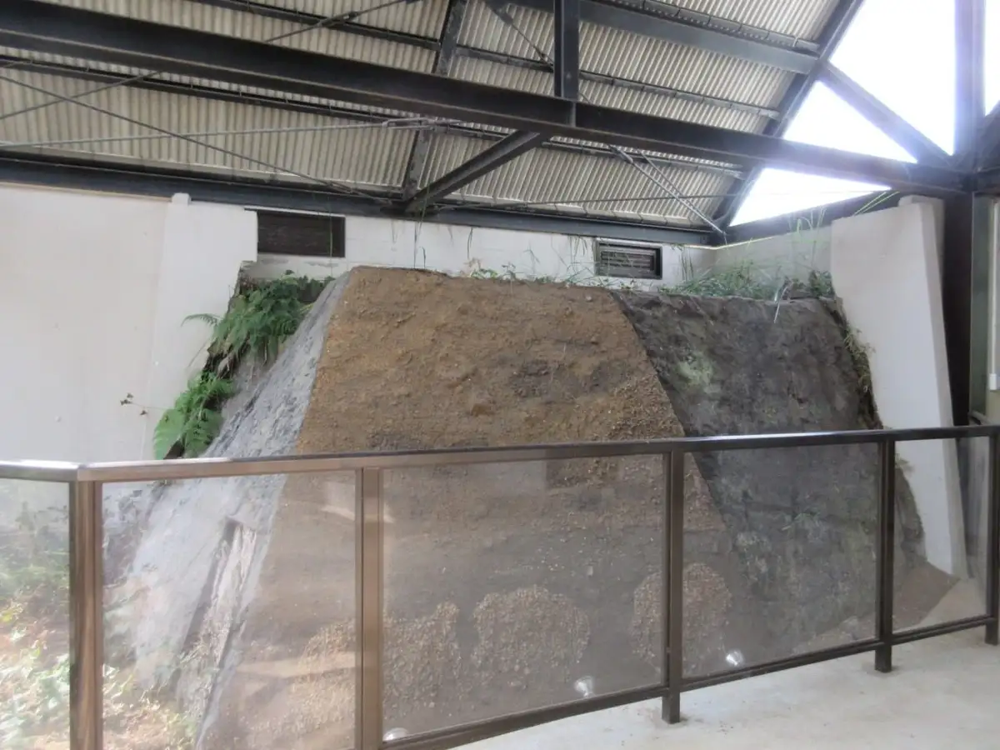
Stay
椿ＨＯＵＳＥ
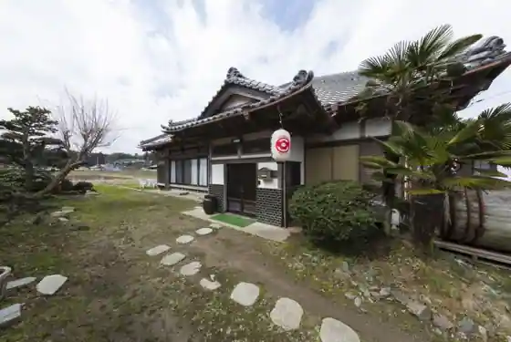
Tsubaki HOUSE
Dining
カフェ＆レストラン オリゼ
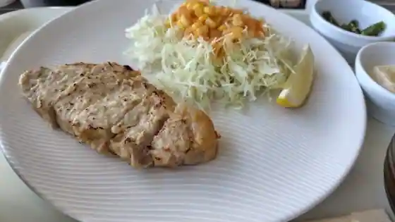
Cafe & Restaurant Orize
chigusa
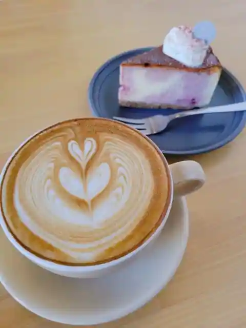
chigusa
発酵市場 道の駅発酵の里こうざき
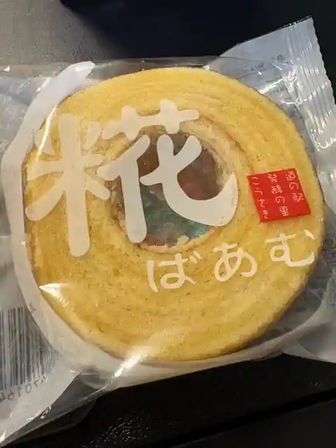
Hakko Shijo Michi No Eki Hakko No Sato Kozaki
ぺきん亭
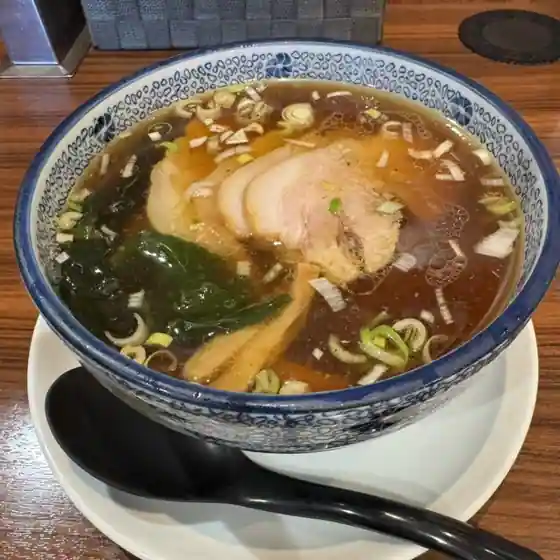
Pekin Tei
はっこう茶房
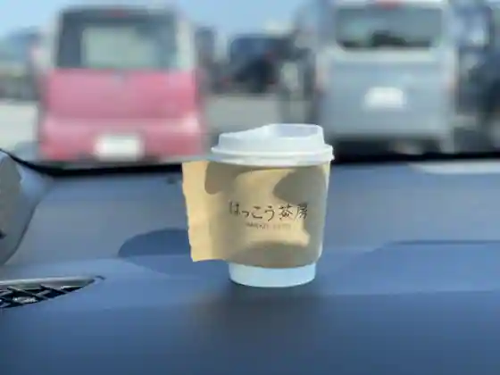
Hakko Sabo
ほそ川
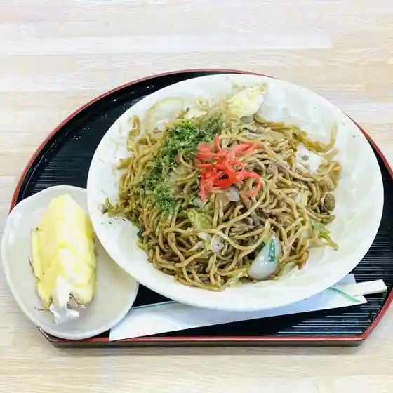
Hoso Kawa
道の駅 発酵の里 こうざき
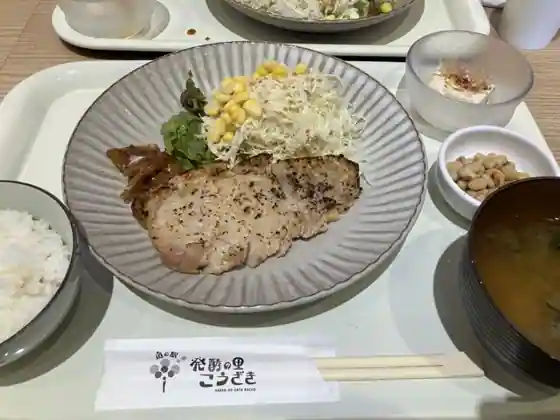
Michi No Eki Hakko No Sato Kozaki
亀家
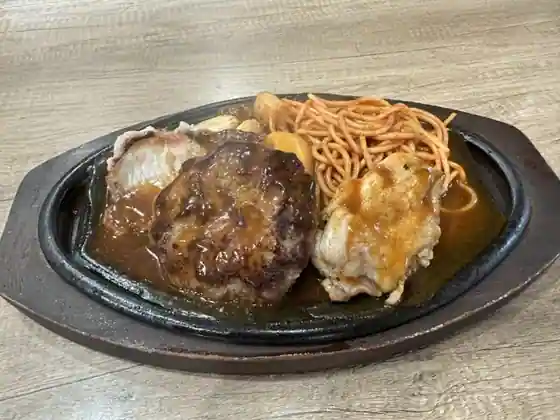
Kame Ie
発酵暮らし研究所andカフェ うふふ
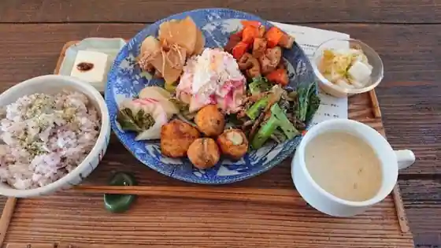
Hakko Kurashi Kenkyusho and Cafe Ufufu
三楽食堂
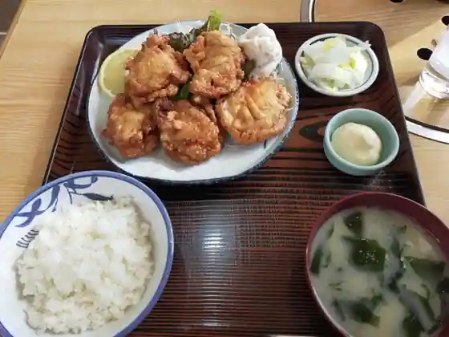
Sanraku Shokudo
福ちゃんのパン
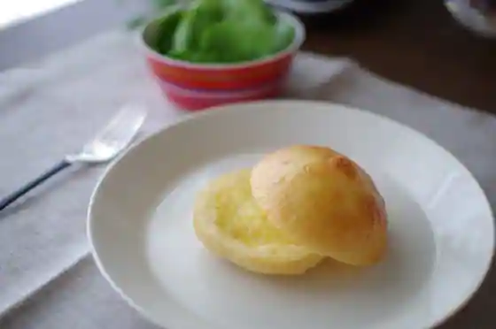
Fuku Channo Bakery
カフェ&デリ インディゴコーヒー
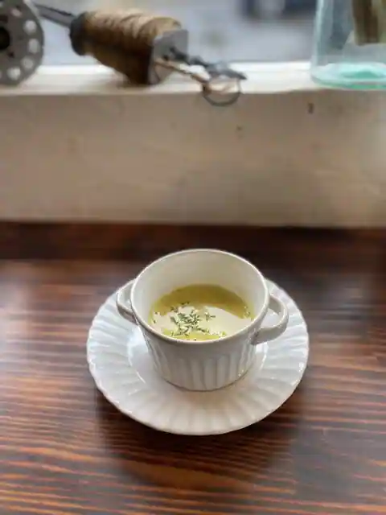
Cafe & Deri Indigo Coffee
リトルフォレスト ユウユウ
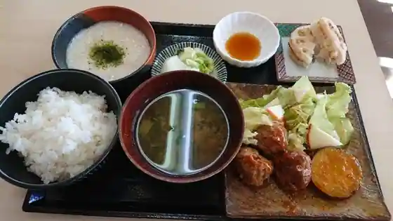
Ritoruforesuto Yuyu
カフェ680
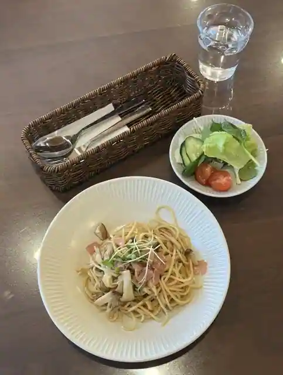
Cafe 680
小林菓子舗
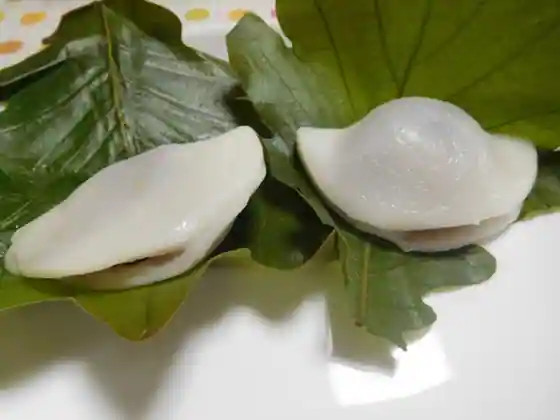
Kobayashi Kashi Ho
おか乃
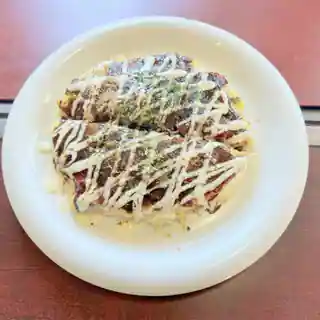
Oka No
ディッシュマジックアタゴ
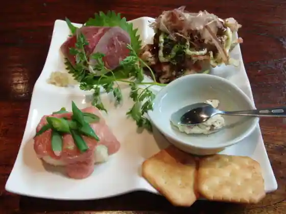
Disshumajikkuatago
Sights
Roadside Station Hakko no Sato Kozaki
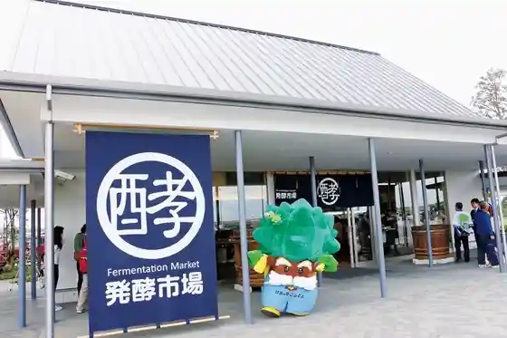
Kozaki Shrine (Nanjamonja no Ki)
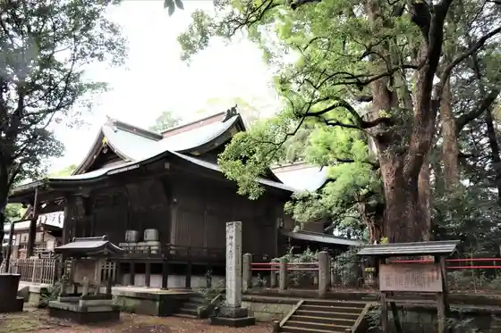
Nabe Mise Chokueiten Nabeya Gengoemon Kozaki Tozo Mise
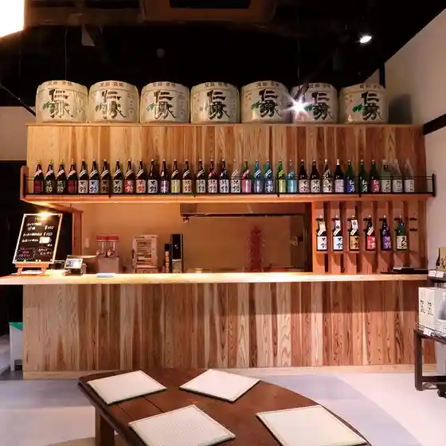
Kozaki Ten no Kawa Park
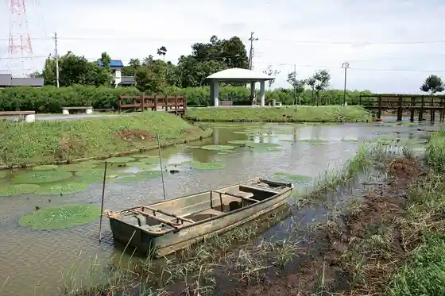
Nishi no Shiro Kaizuka